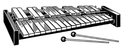

The xylophone is a musical instrument in the percussion family that consists
of wooden bars struck by mallets.
Each bar is an idiophone tuned to a pitch of a
musical scale, whether pentatonic or heptatonic in the case of many African and
Asian instruments, diatonic in many western children's instruments, or chromatic
for orchestral use.
The term Xylophone may be used generally, to include all such instruments such
as the marimba, balafon and even the semantron.
However, in the orchestra, the
term xylophone refers specifically to a chromatic instrument of somewhat higher
pitch range and drier timbre than the marimba, and these two instruments should
not be confused.
The term is also popularly used to refer to similar instruments of the
lithophone and metallophone types.
For example, the Pixiphone and many similar
toys described by the makers as xylophones have bars of metal rather than of
wood, and so are in organology regarded as glockenspiels rather than as
xylophones. The bars of metal sound more high pitched than the wooden ones.
The modern western xylophone has bars of rosewood, padauk, or various synthetic
materials such as fiberglass or fiberglass-reinforced plastic which allows a
louder sound.Some can be as small a range as 2½ octaves but concert xylophones
are typically 3½ or 4 octaves.
The xylophone is a transposing instrument: its
parts are written one octave below the sounding notes. Xylophones should be
played with very hard rubber, polyball, or acrylic mallets. Sometimes medium to
hard rubber mallets, very hard core, or yarn mallets are used for softer
effects. Lighter tones can be created on xylophones by using wooden-headed
mallets made from rosewood, ebony, birch, or other hard woods.

Concert xylophones have tube resonators below the bars to enhance the tone and
sustain. Frames are made of wood or cheap steel tubing: more expensive
xylophones feature height adjustment and more stability in the stand. In other
music cultures some versions have gourds that act as Helmholtz resonators.
Others are "trough" xylophones with a single hollow body that acts as a
resonator for all the bars. Old methods consisted of arranging the bars on tied
bundles of straw, and, as still practiced today, placing the bars adjacent to
each other in a ladder-like layout. Ancient mallets were made of willow wood
with spoon-like bowls on the beaten ends.
History:
The instrument has obscure, ancient origins. According to Nettl, it originated
in southeast Asia and came to Africa c. 500 AD when a group of Malayo-Polynesian
speaking peoples migrated to Africa.
One piece of evidence for this is the
similarity between East African xylophone orchestras and Javanese and Balinese
gamelan orchestras.This, however has been questioned by ethnomusicologist and
linguist Roger Blench who posits an independent origin in Africa.
The Asian xylophone:
The earliest evidence of a true xylophone is from the 9th century in southeast
Asia, while a similar hanging wood instrument—a type of harmonicon—is said to
have existed in 2000 BC in what is now part of China, according to the Vienna
Symphonic Library.
The xylophone-like ranat was used in Hindu regions. Java and
Bali use xylophones in gamelan ensembles. They still have traditional
significance in Africa, Malaysia, Melanesia, Indonesia, Thailand, Myanmar and
regions of the Americas.
The African xylophone:
The term marimba is also applied to various traditional folk instruments such as
the West Africa balafon. Early forms were constructed of bars atop a gourd. The
wood is first roasted around a fire before shaping the key to achieve the
desired tone.
The resonator is tuned to the key through careful choice of size
of resonator, adjustment of the diameter of the mouth of the resonator using
wasp wax and adjustment of the height of the key above the resonator. A skilled
maker can produce startling amplification.
The mallets used to play dibinda and
mbila have heads made from natural rubber taken from a wild creeping plant.[10]
"Interlocking" or alternating rhythm features in Eastern African xylophone music
such as that of the Makonde dimbila, the Yao mangolongondo or the Shirima
mangwilo in which the opachera, the initial caller, is responded to by another
player, the wakulela. This usually doubles an already rapid rhythmic pulse that
may also co-exist with a counter-rhythm.